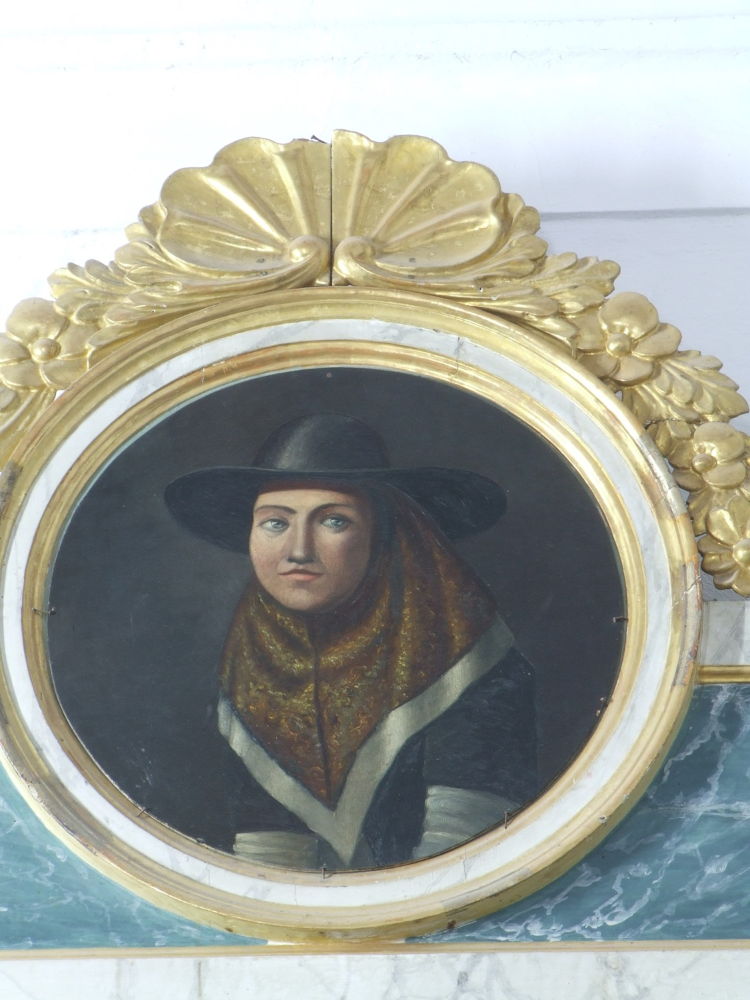

Santa Catalina Tomás (1531–1574), conocida popularmente en Mallorca como *sor Tomasseta* o la Beata, es la única santa nacida en Mallorca. Fue una monja canonesa agustina, famosa en vida por su sabiduría y prudencia, por sus dones proféticos, por sus luchas con el demonio y por sus éxtasis místicos, a veces de 24 horas. Su cuerpo incorrupto está expuesto en el convento de Santa Magdalena de Palma. En esta pintura aparece vestida de campesina mallorquina.